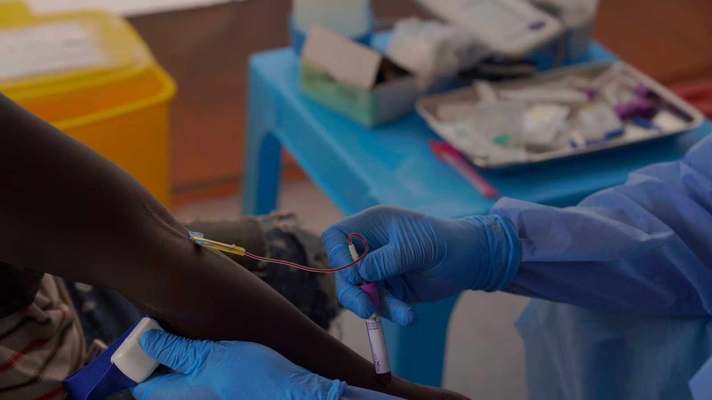

No Congo, estudo testa pílula para evitar Ebola em quem teve contato com doentes
Mais de 250 pessoas já participam do teste do antiviral obeldesivir contra o vírus Bundibugyo, que não tem vacina aprovada.

Mais de 250 pessoas já foram incluídas num estudo que testa um medicamento capaz de impedir que contatos de pacientes desenvolvam Ebola no Congo, onde ocorre o surto mais letal da doença no país, relata a Associated Press. O alvo é o vírus Bundibugyo, para o qual não há vacina nem tratamento aprovados.
Desde que o surto foi declarado, em meados de maio, no leste do Congo, foram registrados ao menos 8.300 casos confirmados e 4.000 mortes, em sete províncias. O rastreamento de contatos tem sido difícil.
O estudo EBO-PEP, coordenado pela ONG médica ALIMA na província de Ituri, avalia o obeldesivir, antiviral experimental em comprimido da Gilead, tomado logo após a exposição suspeita — a chamada profilaxia pós-exposição. A meta é recrutar quase mil adultos e crianças acima de 12 anos, sem sintomas, que tiveram contato com um caso confirmado nos últimos cinco dias; metade recebe placebo. Os participantes são acompanhados diariamente por 21 dias.
Os pesquisadores relatam desafios, como a distância até o centro e o impacto emocional quando participantes perdem familiares. Se funcionar, a pílula pode ajudar a romper a cadeia de transmissão.